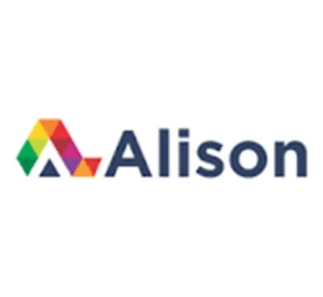
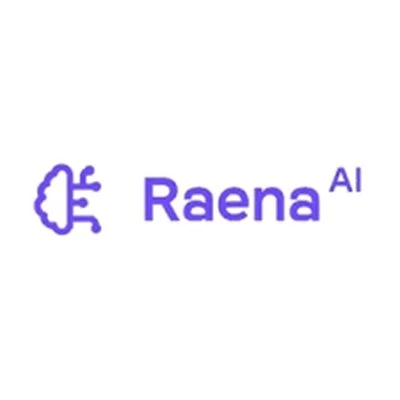
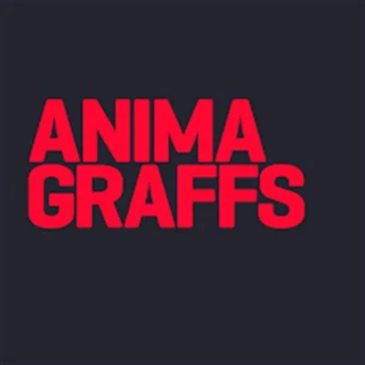
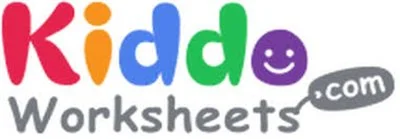

Best AI Learning Tools & Platforms 2026 — Free & Paid
AI is revolutionizing education and self-learning in 2026. Whether you want to learn a new language, earn a free certificate, study faster with AI flashcards, or get personalized tutoring — these are the best AI education and learning tools available. From interactive language apps and online course platforms to AI tutors and kids worksheets, this curated list has everything for learners of all ages.
Some links on this page are affiliate links. We may earn a commission at no extra cost to you. Disclosure policy →

Alison
FreemiumFree online learning platform with thousands of courses and certificates in business, tech, and personal development. Self-paced learning with real accreditation. Trusted by millions.
Try Alison →Tutor AI
FreemiumAI-powered personalized tutor that adapts to your learning needs. Provides explanations, exercises, and real-time progress tracking across any subject at any level.
Try Tutor AI →
Raena AI
FreemiumTransforms PDFs, notes, and text into structured lessons and AI flashcards. Study faster and retain more information through active recall and quiz-based learning.
Try Raena AI →Class Central
FreeOnline course discovery platform comparing MOOCs from all major learning platforms. Find and compare the best courses for your career goals with community reviews and ratings.
Try Class Central →LingoHut
FreeFree language learning platform with vocabulary lessons in 100+ languages. Topic-based practical lessons perfect for beginners who want to build basic communication skills quickly.
Try LingoHut →Language Guide
FreeVisual language learning tool that connects images and audio for intuitive vocabulary acquisition. Click objects to hear pronunciation — great for visual learners and beginners.
Try Language Guide →
Animagraffs
FreeEducational platform explaining complex systems through detailed 3D animations. Understand how machines, technologies, and engineering processes work in a visually engaging format.
Try Animagraffs →
Kiddo Worksheets
FreeFree printable educational worksheets for children covering math, reading, and creative subjects. Supports early learning at home and in schools. Perfect for parents and teachers.
Try Kiddo Worksheets →Frequently Asked Questions – AI Education Tools
What is the best AI tool for studying and learning?
Raena AI is the top pick for studying — it converts your notes and textbooks into flashcards and quizzes automatically. Tutor AI is best for personalized subject tutoring with adaptive learning paths.
Where can I get free online courses with certificates?
Alison offers thousands of free online courses with accredited certificates in business, technology, and personal development. Class Central is the best aggregator to compare courses across all major platforms.
What is the best free language learning tool?
LingoHut is free and covers 100+ languages through practical, topic-based lessons. Language Guide is particularly good for visual learners who learn best by connecting images to words and sounds.
Can AI tutors replace human teachers?
AI tutors like Tutor AI and Raena AI can handle repetitive practice, personalized drills, and on-demand explanations 24/7 — areas where human teachers have limited time. However, human teachers remain essential for motivation, mentorship, critical thinking development, and complex subject mastery. AI tutors are best understood as always-available learning assistants, not replacements for educators.
What is the fastest way to learn a new language with AI?
The most effective AI-assisted language learning approach combines: daily vocabulary practice with LingoHut (free, 100+ languages), AI conversation practice with Tutor AI (simulates real conversations), and immersive listening through native content. Consistency matters more than duration — 15 minutes daily outperforms 2 hours weekly according to language acquisition research.
Some links on this page are affiliate links. We may earn a commission at no extra cost to you. Disclosure policy →